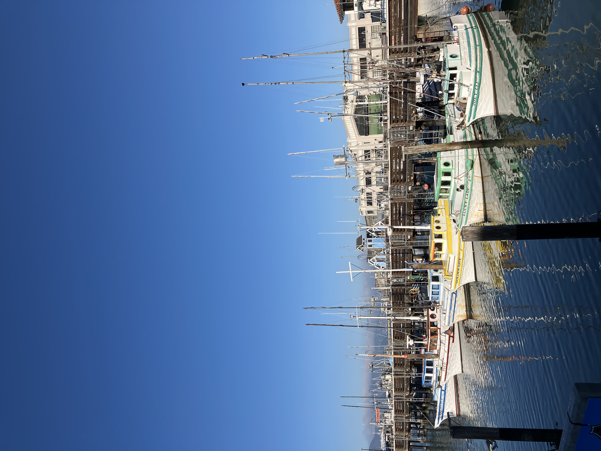
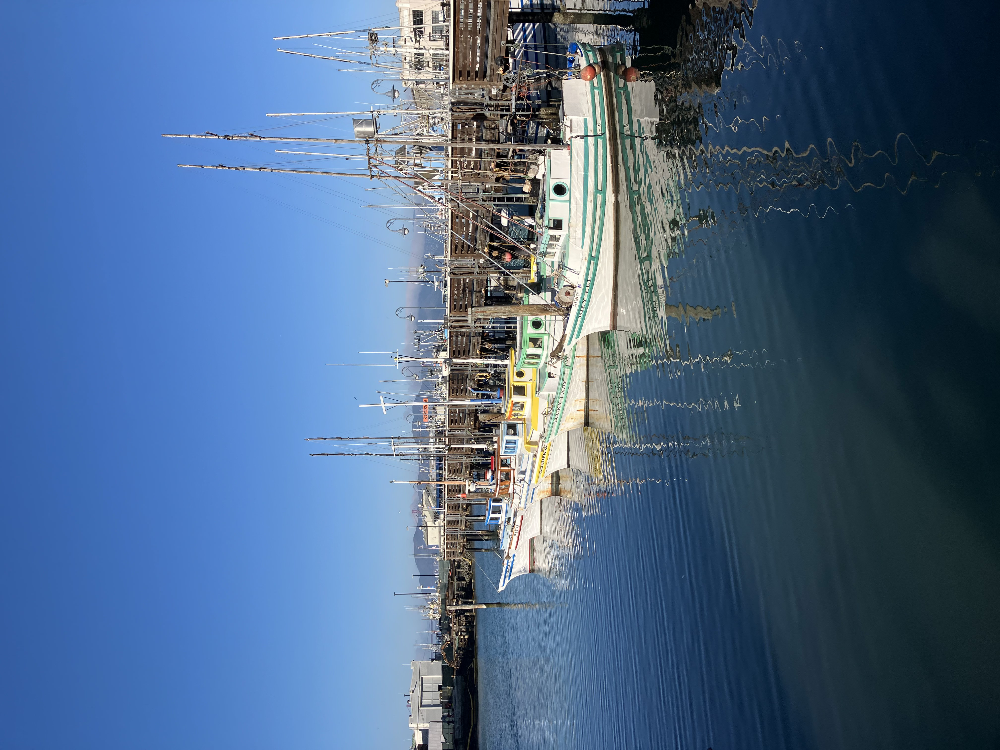

Updates
13/01/26
San Francisco Reflection: 3 full days
-Simon Owen
Check out these pretty boats.
 There's A LOT of stuff to post, going way back to my two nights in L.A. on October 19th and 20th. My next post may be the Mexico City stuff including El Dia de Los Muertos de Alebrijes. I accidentally learnt that word as Alejibres so now I have to learn the actual word. Anyway, signing out.
11/12/25
Slight update to site + end of Mexico/U.S.A trip
-Simon Owen

Davison Rd: The drive to and from the carpark was beautiful

Fern Canyon was used in Jurassic Park 2. The dinosaurs which attack the guy are Compsognathus, aka Compys, which are important in the start of the original Jurassic Park book but didn't appear in the film adaptation until number 2. Click here

Sometime a good few months ago (today: 11/12/25)
Updated movie blog
-Simon Owen

 Movies
Movies Books
Books Television
Television Taoisms
Taoisms Judaisms
Judaisms Snacks
Snacks Travel
Travel